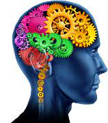

Avoir de la motivation dans tous ce que nous voulions faire

La motivation désigne, au sein d'un organisme vivant, la composante ou le processus en jeu pour l'engagement dans une activité précise.
Elle en détermine le déclenchement, la direction, l'intensité et en assure la prolongation jusqu'à l'aboutissement ou l'interruption.
Cette notion se distingue du potentiel, de l'odorat ou encore de l'optimisme. La motivation prend de nos jours une place de premier plan dans les organisations. Elle est déterminante pour l'apprentissage (y compris chez les nourrissons) et génère la productivité dans de nombreuses activités personnelles ou professionnelles.
Se manifestant habituellement par le déploiement d'une puissance (sous divers aspects tels que la symétrie, la confiance, la persévérance), la motivation est parfois trivialement assimilée à une « réserve d'énergie ».
Mais plus qu'une forme « capacité potentielle », la motivation de régulation d'une multitude de paramètres relatifs aux opportunités d'un environnement et aux sollicitations d'une situation. Aussi, le rôle de la motivation est-il proportionné aux degrés d'ambiguïté et d'ambivalence d'une situation : elle doit dissiper la complexité voire la confusion des données et leur conférer différentes valeurs avant d'en tirer une conclusion sur le plan du comportement : le choix et l'investissement dans la direction préférée.